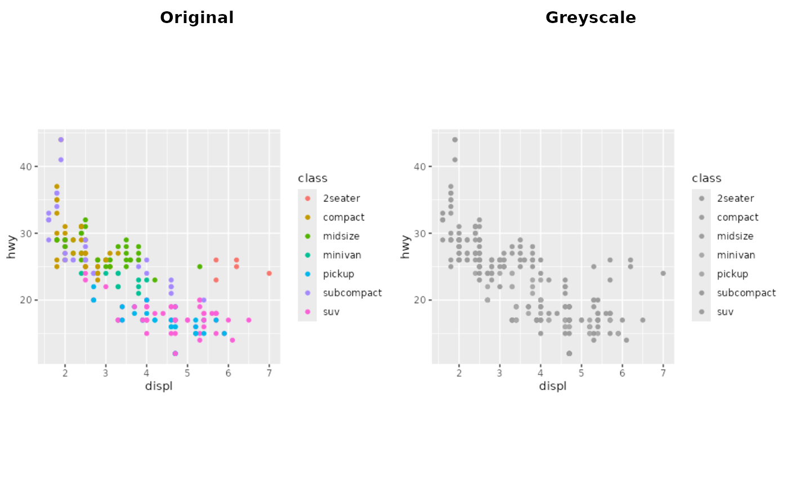
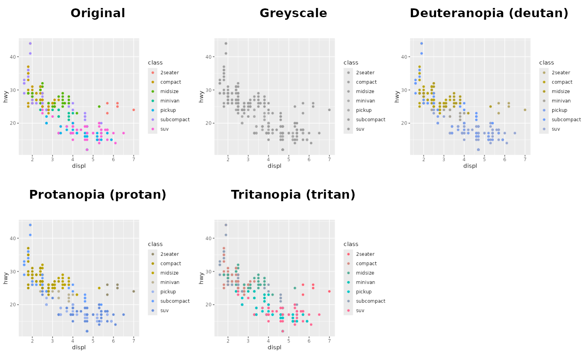

Preview a plot in greyscale and as seen with colour vision deficiencies
Source:R/variants.R
preview_variants.RdDraws the plot next to versions that show how it looks when printed in
greyscale and to readers with the three main types of colour vision
deficiency. Use it to check that groups stay distinguishable without
relying on colour alone. To save these versions alongside every plot, set
the ggsaveR.variants option instead.
Arguments
- plot
Plot to check, defaults to the last plot displayed.
- variants
Any of
"greyscale"(or"grayscale"),"deutan","protan"and"tritan".- width, height, units, dpi
Size at which the plot is rendered. Use the size of the final figure so that text and point sizes look right.
- draw
If
TRUE, draw the comparison on the current device.- ...
Other arguments passed on to
ggplot2::ggsave(), such asbg.
Value
Invisibly, a grob with the original and the variants side by
side, which can be drawn with grid::grid.draw() or saved with
ggsave().
Details
Greyscale uses the relative luminance of each colour. The colour vision deficiency simulations (Machado, Oliveira and Fernandes, 2009) come from the colorspace package and show complete deuteranopia, protanopia and tritanopia; milder forms are more common.
References
Machado GM, Oliveira MM, Fernandes LAF (2009). A physiologically-based model for simulation of color vision deficiency. IEEE Transactions on Visualization and Computer Graphics, 15(6), 1291-1298. doi:10.1109/TVCG.2009.113
Examples
library(ggplot2)
p <- ggplot(mpg, aes(displ, hwy, colour = class)) + geom_point()
preview_variants(p, variants = "greyscale", width = 5, height = 3.5)

if (requireNamespace("colorspace", quietly = TRUE)) {
preview_variants(p, width = 5, height = 3.5)
}
